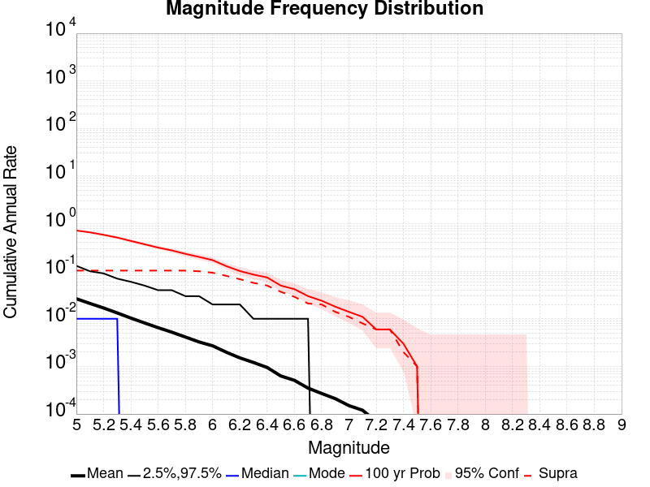
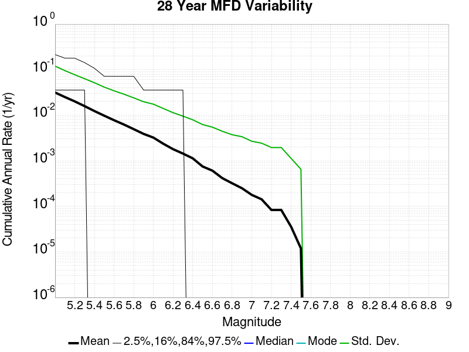
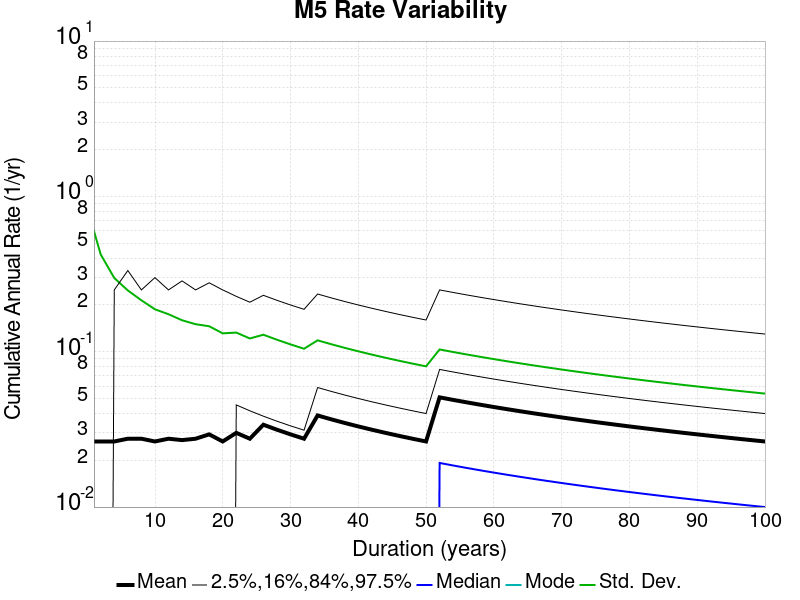
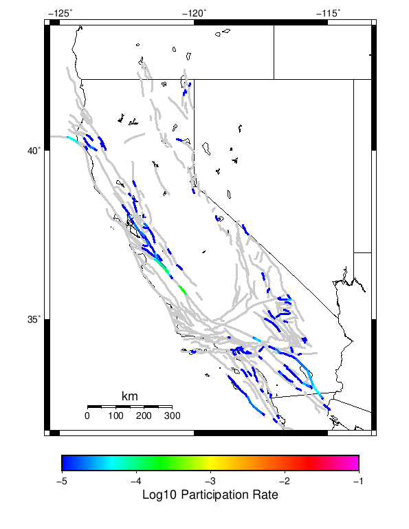
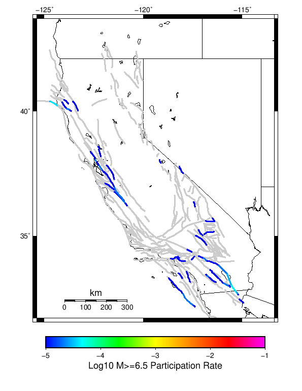
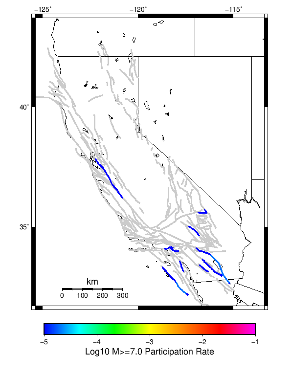
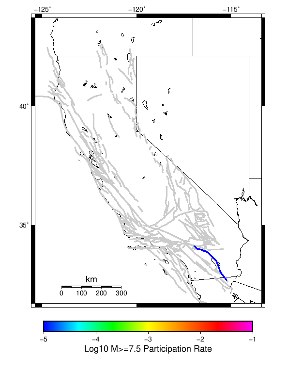
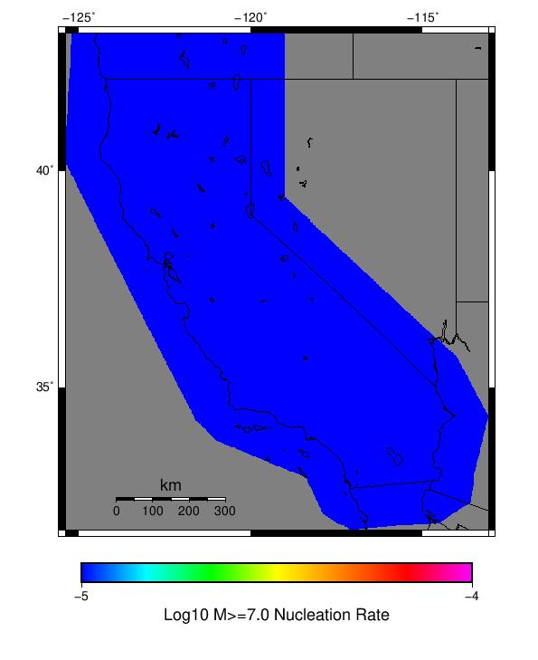

Start 1919, 100 yr, Log10(k)=-2.31, p=1.08, c=0.04, Spontaneous Results
| Start 1919, 100 yr, Log10(k)=-2.31, p=1.08, c=0.04, Spontaneous |
|---|
| Num Simulations | 1000 |
| Start Time | 1919/01/01 00:00:00 UTC |
| Start Time Epoch Milliseconds | -1609459200000 |
| Duration | 100 Years |
| Includes Spontaneous? | true |
| Trigger Ruptures | (none) |
| Historical Ruptures | (none) |
| Config Generated With | u3etas_config_builder.sh --start-year 1919 --num-simulations 1000 --duration 100 --include-spontaneous --etas-k -2.31 --etas-p 1.08 --etas-c 0.04 --hpc-site USC_HPC --nodes 36 --hours 24 --queue scec |
Table Of Contents
Magnitude Frequency Distribution
(top)
Legend
- Mean (thick black line): mean annual rate across all 1000 catalogs
- 2.5%,97.5% (thin black lines): annual rate percentiles across all 1000 catalogs
- Median (thin blue line): median annual rate across all 1000 catalogs
- Mode (thin cyan line): modal annual rate across all 1000 catalogs (scaled to annualized value)
- 100 yr Probability (thin red line): 100 year probability calculated as the fraction of catalogs with at least 1 occurrence
- 100 yr Supraseismogenic Probability (thin dashed red line): same as above, but only for supraseismogenic ruptures on explicitly modeled UCERF3 faults
- 95% Conf (light red shaded region): binomial 95% confidence bounds on probability

| Mag | Mean | 2.5 %ile | 97.5 %ile | Median | Mode | 100 yr Probability | 100 yr Supra-Seis Prob |
|---|
| M≥5 | 0.026 | 0.000 | 0.130 | 0.010 | 0.000 | 0.718 (71.80%) | 0.103 (10.30%) |
| M≥5.1 | 0.021 | 0.000 | 0.100 | 0.010 | 0.000 | 0.656 (65.60%) | 0.103 (10.30%) |
| M≥5.2 | 0.017 | 0.000 | 0.090 | 0.010 | 0.000 | 0.583 (58.30%) | 0.103 (10.30%) |
| M≥5.3 | 0.013 | 0.000 | 0.070 | 0.010 | 0.000 | 0.510 (51.00%) | 0.103 (10.30%) |
| M≥5.4 | 0.010 | 0.000 | 0.060 | 0.000 | 0.000 | 0.434 (43.40%) | 0.103 (10.30%) |
| M≥5.5 | 8.20E-3 | 0.000 | 0.050 | 0.000 | 0.000 | 0.369 (36.90%) | 0.103 (10.30%) |
| M≥5.6 | 6.52E-3 | 0.000 | 0.040 | 0.000 | 0.000 | 0.314 (31.40%) | 0.103 (10.30%) |
| M≥5.7 | 5.25E-3 | 0.000 | 0.040 | 0.000 | 0.000 | 0.274 (27.40%) | 0.103 (10.30%) |
| M≥5.8 | 4.15E-3 | 0.000 | 0.030 | 0.000 | 0.000 | 0.232 (23.20%) | 0.103 (10.30%) |
| M≥5.9 | 3.27E-3 | 0.000 | 0.030 | 0.000 | 0.000 | 0.200 (20.00%) | 0.100 (10.00%) |
| M≥6 | 2.71E-3 | 0.000 | 0.020 | 0.000 | 0.000 | 0.171 (17.10%) | 0.093 (9.30%) |
| M≥6.1 | 1.99E-3 | 0.000 | 0.020 | 0.000 | 0.000 | 0.128 (12.80%) | 0.080 (8.00%) |
| M≥6.2 | 1.51E-3 | 0.000 | 0.020 | 0.000 | 0.000 | 0.101 (10.10%) | 0.068 (6.80%) |
| M≥6.3 | 1.21E-3 | 0.000 | 0.010 | 0.000 | 0.000 | 0.085 (8.50%) | 0.057 (5.70%) |
| M≥6.4 | 9.50E-4 | 0.000 | 0.010 | 0.000 | 0.000 | 0.074 (7.40%) | 0.050 (5.00%) |
| M≥6.5 | 6.30E-4 | 0.000 | 0.010 | 0.000 | 0.000 | 0.050 (5.00%) | 0.037 (3.70%) |
| M≥6.6 | 5.10E-4 | 0.000 | 0.010 | 0.000 | 0.000 | 0.042 (4.20%) | 0.029 (2.90%) |
| M≥6.7 | 3.50E-4 | 0.000 | 0.010 | 0.000 | 0.000 | 0.030 (3.00%) | 0.021 (2.10%) |
| M≥6.8 | 2.70E-4 | 0.000 | 0.000 | 0.000 | 0.000 | 0.024 (2.40%) | 0.020 (2.00%) |
| M≥6.9 | 2.10E-4 | 0.000 | 0.000 | 0.000 | 0.000 | 0.018 (1.80%) | 0.014 (1.40%) |
| M≥7 | 1.50E-4 | 0.000 | 0.000 | 0.000 | 0.000 | 0.014 (1.40%) | 0.011 (1.10%) |
| M≥7.1 | 1.20E-4 | 0.000 | 0.000 | 0.000 | 0.000 | 0.011 (1.10%) | 8.00E-3 (0.80%) |
| M≥7.2 | 7.00E-5 | 0.000 | 0.000 | 0.000 | 0.000 | 6.00E-3 (0.60%) | 6.00E-3 (0.60%) |
| M≥7.3 | 7.00E-5 | 0.000 | 0.000 | 0.000 | 0.000 | 6.00E-3 (0.60%) | 6.00E-3 (0.60%) |
| M≥7.4 | 3.00E-5 | 0.000 | 0.000 | 0.000 | 0.000 | 3.00E-3 (0.30%) | 2.00E-3 (0.20%) |
| M≥7.5 | 1.00E-5 | 0.000 | 0.000 | 0.000 | 0.000 | 1.00E-3 (0.10%) | 1.00E-3 (0.10%) |
| M≥7.6 | 0.000 | 0.000 | 0.000 | 0.000 | 0.000 | 0.000 (0.00%) | 0.000 (0.00%) |
| M≥7.7 | 0.000 | 0.000 | 0.000 | 0.000 | 0.000 | 0.000 (0.00%) | 0.000 (0.00%) |
| M≥7.8 | 0.000 | 0.000 | 0.000 | 0.000 | 0.000 | 0.000 (0.00%) | 0.000 (0.00%) |
| M≥7.9 | 0.000 | 0.000 | 0.000 | 0.000 | 0.000 | 0.000 (0.00%) | 0.000 (0.00%) |
| M≥8 | 0.000 | 0.000 | 0.000 | 0.000 | 0.000 | 0.000 (0.00%) | 0.000 (0.00%) |
| M≥8.1 | 0.000 | 0.000 | 0.000 | 0.000 | 0.000 | 0.000 (0.00%) | 0.000 (0.00%) |
| M≥8.2 | 0.000 | 0.000 | 0.000 | 0.000 | 0.000 | 0.000 (0.00%) | 0.000 (0.00%) |
| M≥8.3 | 0.000 | 0.000 | 0.000 | 0.000 | 0.000 | 0.000 (0.00%) | 0.000 (0.00%) |
| M≥8.4 | 0.000 | 0.000 | 0.000 | 0.000 | 0.000 | 0.000 (0.00%) | 0.000 (0.00%) |
| M≥8.5 | 0.000 | 0.000 | 0.000 | 0.000 | 0.000 | 0.000 (0.00%) | 0.000 (0.00%) |
| M≥8.6 | 0.000 | 0.000 | 0.000 | 0.000 | 0.000 | 0.000 (0.00%) | 0.000 (0.00%) |
| M≥8.7 | 0.000 | 0.000 | 0.000 | 0.000 | 0.000 | 0.000 (0.00%) | 0.000 (0.00%) |
| M≥8.8 | 0.000 | 0.000 | 0.000 | 0.000 | 0.000 | 0.000 (0.00%) | 0.000 (0.00%) |
| M≥8.9 | 0.000 | 0.000 | 0.000 | 0.000 | 0.000 | 0.000 (0.00%) | 0.000 (0.00%) |
| M≥9 | 0.000 | 0.000 | 0.000 | 0.000 | 0.000 | 0.000 (0.00%) | 0.000 (0.00%) |
Long Term Rate Variability
(top)
80 Year Variability
(top)

Download CSV Here
| Magnitude | Mean | Median | Mode | Std. Dev. | 2.5 %-ile | 16 %-ile | 84 %-ile | 97.5 %-ile |
|---|
| 5.0 | 0.03305 | 0.0125 | 0.0 | 0.06722419 | 0.0 | 0.0 | 0.05 | 0.1625 |
| 5.1 | 0.0263 | 0.0125 | 0.0 | 0.05365341 | 0.0 | 0.0 | 0.0375 | 0.125 |
| 5.2 | 0.0211125 | 0.0125 | 0.0 | 0.043571834 | 0.0 | 0.0 | 0.0375 | 0.1125 |
| 5.3 | 0.0166375 | 0.0125 | 0.0 | 0.035946377 | 0.0 | 0.0 | 0.025 | 0.0875 |
| 5.4 | 0.0129625 | 0.0 | 0.0 | 0.029445872 | 0.0 | 0.0 | 0.025 | 0.075 |
| 5.5 | 0.01025 | 0.0 | 0.0 | 0.023668231 | 0.0 | 0.0 | 0.025 | 0.0625 |
| 5.6 | 0.00815 | 0.0 | 0.0 | 0.019714301 | 0.0 | 0.0 | 0.0125 | 0.05 |
| 5.7 | 0.0065625 | 0.0 | 0.0 | 0.016729306 | 0.0 | 0.0 | 0.0125 | 0.05 |
| 5.8 | 0.0051875 | 0.0 | 0.0 | 0.01394195 | 0.0 | 0.0 | 0.0125 | 0.0375 |
| 5.9 | 0.0040875 | 0.0 | 0.0 | 0.011530679 | 0.0 | 0.0 | 0.0125 | 0.0375 |
| 6.0 | 0.0033875 | 0.0 | 0.0 | 0.010218146 | 0.0 | 0.0 | 0.0125 | 0.025 |
| 6.1 | 0.0024875 | 0.0 | 0.0 | 0.008290043 | 0.0 | 0.0 | 0.0 | 0.025 |
| 6.2 | 0.0018875 | 0.0 | 0.0 | 0.006713879 | 0.0 | 0.0 | 0.0 | 0.025 |
| 6.3 | 0.0015125 | 0.0 | 0.0 | 0.005653588 | 0.0 | 0.0 | 0.0 | 0.0125 |
| 6.4 | 0.0011875 | 0.0 | 0.0 | 0.004712303 | 0.0 | 0.0 | 0.0 | 0.0125 |
| 6.5 | 7.875E-4 | 0.0 | 0.0 | 0.0037316242 | 0.0 | 0.0 | 0.0 | 0.0125 |
| 6.6 | 6.375E-4 | 0.0 | 0.0 | 0.003270786 | 0.0 | 0.0 | 0.0 | 0.0125 |
| 6.7 | 4.375E-4 | 0.0 | 0.0 | 0.002675725 | 0.0 | 0.0 | 0.0 | 0.0125 |
| 6.8 | 3.375E-4 | 0.0 | 0.0 | 0.00224664 | 0.0 | 0.0 | 0.0 | 0.0 |
| 6.9 | 2.625E-4 | 0.0 | 0.0 | 0.002038136 | 0.0 | 0.0 | 0.0 | 0.0 |
| 7.0 | 1.875E-4 | 0.0 | 0.0 | 0.0016197893 | 0.0 | 0.0 | 0.0 | 0.0 |
| 7.1 | 1.5E-4 | 0.0 | 0.0 | 0.0014721302 | 0.0 | 0.0 | 0.0 | 0.0 |
| 7.2 | 8.75E-5 | 0.0 | 0.0 | 0.0011832133 | 0.0 | 0.0 | 0.0 | 0.0 |
| 7.3 | 8.75E-5 | 0.0 | 0.0 | 0.0011832133 | 0.0 | 0.0 | 0.0 | 0.0 |
| 7.4 | 3.75E-5 | 0.0 | 0.0 | 6.839675E-4 | 0.0 | 0.0 | 0.0 | 0.0 |
| 7.5 | 1.25E-5 | 0.0 | 0.0 | 3.952847E-4 | 0.0 | 0.0 | 0.0 | 0.0 |
| 7.6 | 0.0 | 0.0 | 0.0 | 0.0 | 0.0 | 0.0 | 0.0 | 0.0 |
| 7.7 | 0.0 | 0.0 | 0.0 | 0.0 | 0.0 | 0.0 | 0.0 | 0.0 |
| 7.8 | 0.0 | 0.0 | 0.0 | 0.0 | 0.0 | 0.0 | 0.0 | 0.0 |
| 7.9 | 0.0 | 0.0 | 0.0 | 0.0 | 0.0 | 0.0 | 0.0 | 0.0 |
| 8.0 | 0.0 | 0.0 | 0.0 | 0.0 | 0.0 | 0.0 | 0.0 | 0.0 |
| 8.1 | 0.0 | 0.0 | 0.0 | 0.0 | 0.0 | 0.0 | 0.0 | 0.0 |
| 8.2 | 0.0 | 0.0 | 0.0 | 0.0 | 0.0 | 0.0 | 0.0 | 0.0 |
| 8.3 | 0.0 | 0.0 | 0.0 | 0.0 | 0.0 | 0.0 | 0.0 | 0.0 |
| 8.4 | 0.0 | 0.0 | 0.0 | 0.0 | 0.0 | 0.0 | 0.0 | 0.0 |
| 8.5 | 0.0 | 0.0 | 0.0 | 0.0 | 0.0 | 0.0 | 0.0 | 0.0 |
| 8.6 | 0.0 | 0.0 | 0.0 | 0.0 | 0.0 | 0.0 | 0.0 | 0.0 |
| 8.7 | 0.0 | 0.0 | 0.0 | 0.0 | 0.0 | 0.0 | 0.0 | 0.0 |
| 8.8 | 0.0 | 0.0 | 0.0 | 0.0 | 0.0 | 0.0 | 0.0 | 0.0 |
| 8.9 | 0.0 | 0.0 | 0.0 | 0.0 | 0.0 | 0.0 | 0.0 | 0.0 |
| 9.0 | 0.0 | 0.0 | 0.0 | 0.0 | 0.0 | 0.0 | 0.0 | 0.0 |
28 Year Variability
(top)

Download CSV Here
| Magnitude | Mean | Median | Mode | Std. Dev. | 2.5 %-ile | 16 %-ile | 84 %-ile | 97.5 %-ile |
|---|
| 5.0 | 0.031476192 | 0.0 | 0.0 | 0.11946049 | 0.0 | 0.0 | 0.035714287 | 0.21428572 |
| 5.1 | 0.025047619 | 0.0 | 0.0 | 0.09530544 | 0.0 | 0.0 | 0.035714287 | 0.17857143 |
| 5.2 | 0.020107143 | 0.0 | 0.0 | 0.07727495 | 0.0 | 0.0 | 0.035714287 | 0.17857143 |
| 5.3 | 0.015845237 | 0.0 | 0.0 | 0.063371904 | 0.0 | 0.0 | 0.035714287 | 0.14285715 |
| 5.4 | 0.012345238 | 0.0 | 0.0 | 0.051601194 | 0.0 | 0.0 | 0.0 | 0.10714286 |
| 5.5 | 0.009761904 | 0.0 | 0.0 | 0.041399878 | 0.0 | 0.0 | 0.0 | 0.071428575 |
| 5.6 | 0.007761905 | 0.0 | 0.0 | 0.03431312 | 0.0 | 0.0 | 0.0 | 0.071428575 |
| 5.7 | 0.00625 | 0.0 | 0.0 | 0.028968835 | 0.0 | 0.0 | 0.0 | 0.071428575 |
| 5.8 | 0.0049404763 | 0.0 | 0.0 | 0.024029145 | 0.0 | 0.0 | 0.0 | 0.071428575 |
| 5.9 | 0.003892857 | 0.0 | 0.0 | 0.019795556 | 0.0 | 0.0 | 0.0 | 0.035714287 |
| 6.0 | 0.0032261906 | 0.0 | 0.0 | 0.017456926 | 0.0 | 0.0 | 0.0 | 0.035714287 |
| 6.1 | 0.0023690476 | 0.0 | 0.0 | 0.014075159 | 0.0 | 0.0 | 0.0 | 0.035714287 |
| 6.2 | 0.001797619 | 0.0 | 0.0 | 0.011359554 | 0.0 | 0.0 | 0.0 | 0.035714287 |
| 6.3 | 0.0014404762 | 0.0 | 0.0 | 0.009542936 | 0.0 | 0.0 | 0.0 | 0.035714287 |
| 6.4 | 0.0011309524 | 0.0 | 0.0 | 0.007933638 | 0.0 | 0.0 | 0.0 | 0.0 |
| 6.5 | 7.5E-4 | 0.0 | 0.0 | 0.0062443023 | 0.0 | 0.0 | 0.0 | 0.0 |
| 6.6 | 6.0714287E-4 | 0.0 | 0.0 | 0.0054615377 | 0.0 | 0.0 | 0.0 | 0.0 |
| 6.7 | 4.1666668E-4 | 0.0 | 0.0 | 0.004451515 | 0.0 | 0.0 | 0.0 | 0.0 |
| 6.8 | 3.2142858E-4 | 0.0 | 0.0 | 0.0037325514 | 0.0 | 0.0 | 0.0 | 0.0 |
| 6.9 | 2.5E-4 | 0.0 | 0.0 | 0.003379482 | 0.0 | 0.0 | 0.0 | 0.0 |
| 7.0 | 1.7857143E-4 | 0.0 | 0.0 | 0.0026829839 | 0.0 | 0.0 | 0.0 | 0.0 |
| 7.1 | 1.4285714E-4 | 0.0 | 0.0 | 0.0024359701 | 0.0 | 0.0 | 0.0 | 0.0 |
| 7.2 | 8.333333E-5 | 0.0 | 0.0 | 0.001954702 | 0.0 | 0.0 | 0.0 | 0.0 |
| 7.3 | 8.333333E-5 | 0.0 | 0.0 | 0.001954702 | 0.0 | 0.0 | 0.0 | 0.0 |
| 7.4 | 3.5714285E-5 | 0.0 | 0.0 | 0.0011290082 | 0.0 | 0.0 | 0.0 | 0.0 |
| 7.5 | 1.1904762E-5 | 0.0 | 0.0 | 6.5205066E-4 | 0.0 | 0.0 | 0.0 | 0.0 |
| 7.6 | 0.0 | 0.0 | 0.0 | 0.0 | 0.0 | 0.0 | 0.0 | 0.0 |
| 7.7 | 0.0 | 0.0 | 0.0 | 0.0 | 0.0 | 0.0 | 0.0 | 0.0 |
| 7.8 | 0.0 | 0.0 | 0.0 | 0.0 | 0.0 | 0.0 | 0.0 | 0.0 |
| 7.9 | 0.0 | 0.0 | 0.0 | 0.0 | 0.0 | 0.0 | 0.0 | 0.0 |
| 8.0 | 0.0 | 0.0 | 0.0 | 0.0 | 0.0 | 0.0 | 0.0 | 0.0 |
| 8.1 | 0.0 | 0.0 | 0.0 | 0.0 | 0.0 | 0.0 | 0.0 | 0.0 |
| 8.2 | 0.0 | 0.0 | 0.0 | 0.0 | 0.0 | 0.0 | 0.0 | 0.0 |
| 8.3 | 0.0 | 0.0 | 0.0 | 0.0 | 0.0 | 0.0 | 0.0 | 0.0 |
| 8.4 | 0.0 | 0.0 | 0.0 | 0.0 | 0.0 | 0.0 | 0.0 | 0.0 |
| 8.5 | 0.0 | 0.0 | 0.0 | 0.0 | 0.0 | 0.0 | 0.0 | 0.0 |
| 8.6 | 0.0 | 0.0 | 0.0 | 0.0 | 0.0 | 0.0 | 0.0 | 0.0 |
| 8.7 | 0.0 | 0.0 | 0.0 | 0.0 | 0.0 | 0.0 | 0.0 | 0.0 |
| 8.8 | 0.0 | 0.0 | 0.0 | 0.0 | 0.0 | 0.0 | 0.0 | 0.0 |
| 8.9 | 0.0 | 0.0 | 0.0 | 0.0 | 0.0 | 0.0 | 0.0 | 0.0 |
| 9.0 | 0.0 | 0.0 | 0.0 | 0.0 | 0.0 | 0.0 | 0.0 | 0.0 |
Variability Duration Dependence
(top)

Download CSV Here
| Duration (years) | Mean | Median | Mode | Std. Dev. | 2.5 %-ile | 16 %-ile | 84 %-ile | 97.5 %-ile |
|---|
| 1.0 | 0.02644 | 0.0 | 0.0 | 0.59845173 | 0.0 | 0.0 | 0.0 | 0.0 |
| 2.0 | 0.02644 | 0.0 | 0.0 | 0.4227582 | 0.0 | 0.0 | 0.0 | 0.0 |
| 4.0 | 0.02644 | 0.0 | 0.0 | 0.29835296 | 0.0 | 0.0 | 0.0 | 0.25 |
| 6.0 | 0.027541667 | 0.0 | 0.0 | 0.24808046 | 0.0 | 0.0 | 0.0 | 0.33333334 |
| 8.0 | 0.027541667 | 0.0 | 0.0 | 0.2144044 | 0.0 | 0.0 | 0.0 | 0.25 |
| 10.0 | 0.02644 | 0.0 | 0.0 | 0.18758583 | 0.0 | 0.0 | 0.0 | 0.3 |
| 12.0 | 0.027541667 | 0.0 | 0.0 | 0.17434037 | 0.0 | 0.0 | 0.0 | 0.25 |
| 14.0 | 0.026979592 | 0.0 | 0.0 | 0.15946867 | 0.0 | 0.0 | 0.0 | 0.2857143 |
| 16.0 | 0.027541667 | 0.0 | 0.0 | 0.15035692 | 0.0 | 0.0 | 0.0 | 0.25 |
| 18.0 | 0.029377777 | 0.0 | 0.0 | 0.14591718 | 0.0 | 0.0 | 0.0 | 0.2777778 |
| 20.0 | 0.02644 | 0.0 | 0.0 | 0.13132545 | 0.0 | 0.0 | 0.0 | 0.25 |
| 22.0 | 0.030045455 | 0.0 | 0.0 | 0.13280363 | 0.0 | 0.0 | 0.045454547 | 0.22727273 |
| 24.0 | 0.027541667 | 0.0 | 0.0 | 0.12173666 | 0.0 | 0.0 | 0.041666668 | 0.20833333 |
| 26.0 | 0.033897437 | 0.0 | 0.0 | 0.12864976 | 0.0 | 0.0 | 0.03846154 | 0.23076923 |
| 28.0 | 0.031476192 | 0.0 | 0.0 | 0.11946049 | 0.0 | 0.0 | 0.035714287 | 0.21428572 |
| 30.0 | 0.029377777 | 0.0 | 0.0 | 0.111496456 | 0.0 | 0.0 | 0.033333335 | 0.2 |
| 32.0 | 0.027541667 | 0.0 | 0.0 | 0.10452793 | 0.0 | 0.0 | 0.03125 | 0.1875 |
| 34.0 | 0.038882352 | 0.0 | 0.0 | 0.1183889 | 0.0 | 0.0 | 0.05882353 | 0.23529412 |
| 36.0 | 0.03672222 | 0.0 | 0.0 | 0.11181174 | 0.0 | 0.0 | 0.055555556 | 0.22222222 |
| 38.0 | 0.034789473 | 0.0 | 0.0 | 0.10592691 | 0.0 | 0.0 | 0.05263158 | 0.21052632 |
| 40.0 | 0.03305 | 0.0 | 0.0 | 0.10063057 | 0.0 | 0.0 | 0.05 | 0.2 |
| 42.0 | 0.031476192 | 0.0 | 0.0 | 0.095838636 | 0.0 | 0.0 | 0.04761905 | 0.1904762 |
| 44.0 | 0.030045455 | 0.0 | 0.0 | 0.091482334 | 0.0 | 0.0 | 0.045454547 | 0.18181819 |
| 46.0 | 0.02873913 | 0.0 | 0.0 | 0.08750484 | 0.0 | 0.0 | 0.04347826 | 0.17391305 |
| 48.0 | 0.027541667 | 0.0 | 0.0 | 0.0838588 | 0.0 | 0.0 | 0.041666668 | 0.16666667 |
| 50.0 | 0.02644 | 0.0 | 0.0 | 0.080504455 | 0.0 | 0.0 | 0.04 | 0.16 |
| 52.0 | 0.050846152 | 0.01923077 | 0.0 | 0.10342183 | 0.0 | 0.0 | 0.07692308 | 0.25 |
| 54.0 | 0.048962962 | 0.018518519 | 0.0 | 0.09959139 | 0.0 | 0.0 | 0.074074075 | 0.24074075 |
| 56.0 | 0.047214285 | 0.017857144 | 0.0 | 0.09603456 | 0.0 | 0.0 | 0.071428575 | 0.23214285 |
| 58.0 | 0.045586206 | 0.01724138 | 0.0 | 0.09272302 | 0.0 | 0.0 | 0.06896552 | 0.22413793 |
| 60.0 | 0.044066668 | 0.016666668 | 0.0 | 0.08963225 | 0.0 | 0.0 | 0.06666667 | 0.21666667 |
| 62.0 | 0.04264516 | 0.016129032 | 0.0 | 0.08674089 | 0.0 | 0.0 | 0.06451613 | 0.20967741 |
| 64.0 | 0.0413125 | 0.015625 | 0.0 | 0.08403023 | 0.0 | 0.0 | 0.0625 | 0.203125 |
| 66.0 | 0.040060606 | 0.015151516 | 0.0 | 0.08148386 | 0.0 | 0.0 | 0.060606062 | 0.1969697 |
| 68.0 | 0.038882352 | 0.014705882 | 0.0 | 0.07908728 | 0.0 | 0.0 | 0.05882353 | 0.19117647 |
| 70.0 | 0.03777143 | 0.014285714 | 0.0 | 0.076827645 | 0.0 | 0.0 | 0.057142857 | 0.18571429 |
| 72.0 | 0.03672222 | 0.013888889 | 0.0 | 0.074693546 | 0.0 | 0.0 | 0.055555556 | 0.18055555 |
| 74.0 | 0.03572973 | 0.013513514 | 0.0 | 0.072674796 | 0.0 | 0.0 | 0.054054055 | 0.17567568 |
| 76.0 | 0.034789473 | 0.013157895 | 0.0 | 0.07076231 | 0.0 | 0.0 | 0.05263158 | 0.17105263 |
| 78.0 | 0.033897437 | 0.012820513 | 0.0 | 0.06894789 | 0.0 | 0.0 | 0.051282052 | 0.16666667 |
| 80.0 | 0.03305 | 0.0125 | 0.0 | 0.06722419 | 0.0 | 0.0 | 0.05 | 0.1625 |
| 82.0 | 0.032243904 | 0.0121951215 | 0.0 | 0.06558458 | 0.0 | 0.0 | 0.048780486 | 0.15853658 |
| 84.0 | 0.031476192 | 0.011904762 | 0.0 | 0.06402304 | 0.0 | 0.0 | 0.04761905 | 0.15476191 |
| 86.0 | 0.030744186 | 0.011627907 | 0.0 | 0.06253413 | 0.0 | 0.0 | 0.046511628 | 0.15116279 |
| 88.0 | 0.030045455 | 0.011363637 | 0.0 | 0.0611129 | 0.0 | 0.0 | 0.045454547 | 0.14772727 |
| 90.0 | 0.029377777 | 0.011111111 | 0.0 | 0.059754834 | 0.0 | 0.0 | 0.044444446 | 0.14444445 |
| 92.0 | 0.02873913 | 0.010869565 | 0.0 | 0.058455817 | 0.0 | 0.0 | 0.04347826 | 0.14130434 |
| 94.0 | 0.02812766 | 0.010638298 | 0.0 | 0.057212077 | 0.0 | 0.0 | 0.04255319 | 0.13829787 |
| 96.0 | 0.027541667 | 0.010416667 | 0.0 | 0.05602016 | 0.0 | 0.0 | 0.041666668 | 0.13541667 |
| 98.0 | 0.026979592 | 0.010204081 | 0.0 | 0.05487689 | 0.0 | 0.0 | 0.040816326 | 0.13265306 |
| 100.0 | 0.02644 | 0.01 | 0.0 | 0.053779352 | 0.0 | 0.0 | 0.04 | 0.13 |
Section Participation
(top)
Section Participation Plots
(top)
| Min Mag | Complete Catalog (including spontaneous) |
|---|
| All Supra. Seis. |  |
| M≥6.5 |  |
| M≥7 |  |
| M≥7.5 |  |
Supra-Seismogenic Parent Sections Table
(top)
First 10 of 84 with matching ruptures shown
| Parent Name | Total Mean Annual Rate | Total 100 Year Prob |
|---|
| San Andreas (Parkfield) | 2.2E-4 | 0.022 |
| San Andreas (Creeping Section) 2011 CFM | 1.5E-4 | 0.013 |
| Mendocino | 8.0E-5 | 0.008 |
| Calaveras (So) - Paicines extension 2011 CFM | 5.0E-5 | 0.005 |
| Imperial | 5.0E-5 | 0.003 |
| San Andreas (Mojave S) | 4.0E-5 | 0.004 |
| Brawley (Seismic Zone) alt 1 | 3.0E-5 | 0.003 |
| Calaveras (So) 2011 CFM | 3.0E-5 | 0.003 |
| Garlock (East) | 3.0E-5 | 0.003 |
| Hayward (No) 2011 CFM | 3.0E-5 | 0.003 |
M≥6.5 Parent Sections Table
(top)
First 10 of 49 with matching ruptures shown
| Parent Name | Total Mean Annual Rate | Total 100 Year Prob |
|---|
| Imperial | 5.0E-5 | 0.003 |
| Mendocino | 4.0E-5 | 0.004 |
| Brawley (Seismic Zone) alt 1 | 3.0E-5 | 0.003 |
| Hayward (No) 2011 CFM | 3.0E-5 | 0.003 |
| Calaveras (So) - Paicines extension 2011 CFM | 2.0E-5 | 0.002 |
| Calaveras (So) 2011 CFM | 2.0E-5 | 0.002 |
| Earthquake Valley (No Extension) | 2.0E-5 | 0.002 |
| Garberville - Briceland 2011 CFM | 2.0E-5 | 0.002 |
| Hayward (So) 2011 CFM | 2.0E-5 | 0.002 |
| San Andreas (Coachella) rev | 2.0E-5 | 0.002 |
M≥7 Parent Sections Table
(top)
First 10 of 30 with matching ruptures shown
| Parent Name | Total Mean Annual Rate | Total 100 Year Prob |
|---|
| Brawley (Seismic Zone) alt 1 | 2.0E-5 | 0.002 |
| Imperial | 2.0E-5 | 0.002 |
| San Andreas (Coachella) rev | 2.0E-5 | 0.002 |
| San Clemente | 2.0E-5 | 0.002 |
| Calaveras (Central) 2011 CFM | 1.0E-5 | 0.001 |
| Calaveras (So) - Paicines extension 2011 CFM | 1.0E-5 | 0.001 |
| Calaveras (So) 2011 CFM | 1.0E-5 | 0.001 |
| Death Valley (So) | 1.0E-5 | 0.001 |
| Earthquake Valley | 1.0E-5 | 0.001 |
| Earthquake Valley (No Extension) | 1.0E-5 | 0.001 |
M≥7.5 Parent Sections Table
(top)
| Parent Name | Total Mean Annual Rate | Total 100 Year Prob |
|---|
| Brawley (Seismic Zone) alt 1 | 1.0E-5 | 0.001 |
| Imperial | 1.0E-5 | 0.001 |
| San Andreas (Coachella) rev | 1.0E-5 | 0.001 |
| San Andreas (San Bernardino S) | 1.0E-5 | 0.001 |
| San Andreas (San Gorgonio Pass-Garnet HIll) | 1.0E-5 | 0.001 |
Gridded Nucleation
(top)
| Min Mag | Complete Catalog (including spontaneous) |
|---|
| M≥5 | |
| M≥6 | |
| M≥7 |  |
(top)
{
"numSimulations": 1000,
"duration": 100.0,
"startYear": 1919,
"includeSpontaneous": true,
"randomSeed": 1566865128385,
"binaryOutput": true,
"binaryOutputFilters": [
{
"prefix": "results_complete",
"descendantsOnly": false
},
{
"prefix": "results_m5_preserve_chain",
"minMag": 5.0,
"preserveChainBelowMag": true,
"descendantsOnly": false
}
],
"forceRecalc": false,
"simulationName": "Start 1919, 100 yr, Log10(k)\u003d-2.31, p\u003d1.08, c\u003d0.04, Spontaneous",
"numRetries": 3,
"outputDir": "${ETAS_SIM_DIR}/2019_08_26-Start1919_100yr_Log10_k_2p31_p1p08_c0p04_Spontaneous-includeSpont-full_td-scale1.14-modParams",
"cacheDir": "${ETAS_LAUNCHER}/inputs/cache_fm3p1_ba",
"fssFile": "${ETAS_LAUNCHER}/inputs/2013_05_10-ucerf3p3-production-10runs_COMPOUND_SOL_FM3_1_SpatSeisU3_MEAN_BRANCH_AVG_SOL.zip",
"probModel": "FULL_TD",
"applySubSeisForSupraNucl": true,
"totRateScaleFactor": 1.14,
"gridSeisCorr": true,
"timeIndependentERF": false,
"griddedOnly": false,
"imposeGR": false,
"includeIndirectTriggering": true,
"gridSeisDiscr": 0.1,
"catalogCompletenessModel": "RELAXED",
"etas_p": 1.08,
"etas_c": 0.04,
"etas_log10_k": -2.31,
"configCommand": "u3etas_config_builder.sh --start-year 1919 --num-simulations 1000 --duration 100 --include-spontaneous --etas-k -2.31 --etas-p 1.08 --etas-c 0.04 --hpc-site USC_HPC --nodes 36 --hours 24 --queue scec",
"configTime": 1566865128385
}